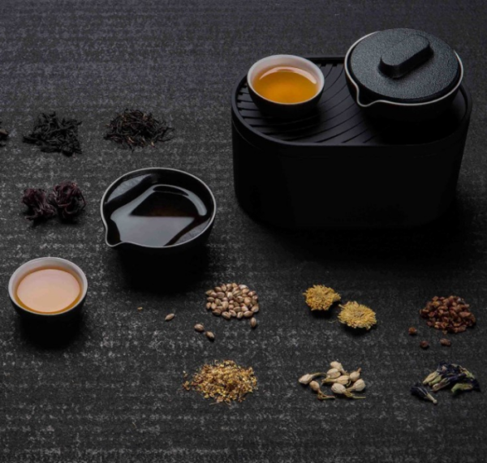

在這裡能學到什麼?
品茶經驗
「 品」這個字有3口， 這意味著喝茶一定要慢慢的品， 需要一口一口的去品， 用心去品嘗其中的奧妙， 才能感受到喝茶的樂趣！

茶具選擇
想泡好一壺茶，就必須瞭解「茶器」並會運用。 茶文化是一門非常博大精深的學問， 光是烹茶、品茶的器具，茶聖陸羽便設計了二十四種茶器， 而這二十四種茶器，僅僅只是用來烹茶和品飲的。

煮茶知識
依照茶葉的發酵程度和製作工法， 而有不同的特性， 搭配的沖泡步驟必然也會有所差異， 掌握各類茶葉所需的合適水溫、 浸泡時間等細節， 更可充分展現出不同茶葉的風味。